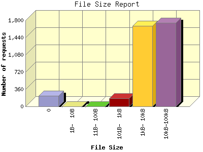

The File Size Report categorizes the size of the file being requested. This can be useful in optimizing site performance. (Remember that on a 28.8Kps modem, it will take on average of 40 seconds to download 100Kb of data.)

| File Size | Number of requests | Percentage of the bytes | |
|---|---|---|---|
| 1. | 0 | 227 | 0.00% |
| 2. | 1B- 10B | 3 | 0.00% |
| 3. | 11B- 100B | 0 | 0.00% |
| 4. | 101B- 1kB | 174 | 0.07% |
| 5. | 1kB- 10kB | 1,688 | 5.39% |
| 6. | 10kB-100kB | 1,752 | 94.54% |
This report was generated on January 31, 2014 07:00.
Report time frame January 1, 2014 03:38 to January 30, 2014 23:55.
| Web statistics report produced by: analog 6.0 / Report Magic 2.21 |